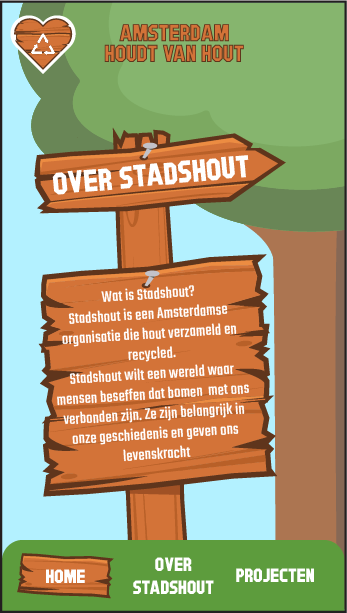

Mijn Werken
Scroll voor meer
-
De Lieve Groene Stad
Een opdracht voor het individuele project "De Lieve Groene Stad", voor dit project moesten we een mobiele app/website maken dat het verhaal van een duurzaam initiatief in Amsterdam toont.
-
Find Your Flow

Een Logo voor een podcast die zich focust op nieuwe opkomende artiesten, gemaakt voor het vak Content
-
Grunge Posters

Een in de "Grunge" art stijl, gemaakt voor het vak Ontwerp geschiedenis